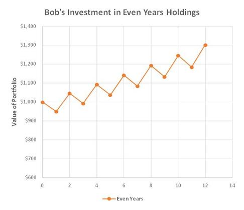
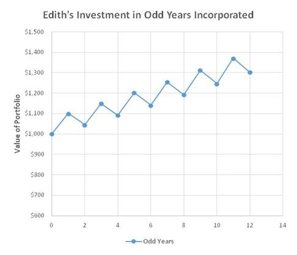
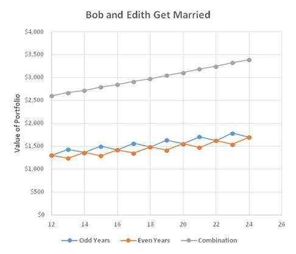

Diversification is dividing up your investment portfolio among a bunch of different things instead of putting it all in one investment. The word "different" is very important in that sentence, because there are two reasons to diversify your investments.
This one is pretty obvious. If you put all your money in the stock of one company and then that company goes belly-up, you end up with nothing. Classic "eggs in one basket" problem - not hard to understand. Of course, if you have all your money in one stock and the company does fantastically well, you'll be pretty happy. For most people, the risk of failure is too great to bet all their retirement money on one thing.
Here's where the word "different" comes in. If you just divide your investments among a bunch of different stocks that are all in the same industry - like putting a fifth of your money in each of the big five Canadian banks, for example - you're not going to get very much diversification. In times that are good for banks they will all go up together, and in times that are bad for banks they will all go down. There will be times when one does better than the others, but the effect will be small. What you really want to do is invest in companies that are all on a general path upwards, but with bends in the path that occur at different times. Let me illustrate with some pictures.
Let's say Bob decides to invest in a company called Even Years Holdings. Even Years always performs really well in years that end in an even number. In odd-numbered years it tends to slump. (Perhaps its customers have some kind of weird superstition.) Anyway, Bob is generally making money from his investment, but those slumping years always worry him, and he therefore doesn't sleep as well in odd-numbered years. Here's a graph of how his money has grown in the years he has owned Even Years Holdings:

All the time that Bob has been investing in Even Years, Edith has been investing in a company called Odd Years Incorporated. Odd Years performs really well in years that end in an odd number and slumps in years that end in an even number. Edith is making about the same money over time as Bob, but the slumping years worry her, too, so she has trouble sleeping in even-numbered years. Here's a graph of Edith's investment:

One day Bob is at Tim Horton's ordering a large double-double and an apple fritter, and Edith is at the other till ordering a mango smoothie and an apple fritter. The two Tim Horton's associates realize there is only one apple fritter left and ask Bob and Edith what they want to do. Bob and Edith take one look at each other and decide to share the doughnut. One thing leads to another and soon they get married. When they combine their portfolios, an interesting thing happens. They're still making the same amount of money, but the graph looks really straight and there are no slumping years. As a result, Bob and Edith find it very easy to sleep together. They live happily ever after. Here's the graph of their investment happiness:

From what I've read, investing in about 20 stocks is enough to achieve a diversified portfolio as long as they're in several different industries. When you're just starting out, you can't really do that on your own. It's hard to buy individual stocks in amounts less than 100 shares at a time, and lots of stocks cost $10 or $20 per share. Some of them can be hundreds of dollars per share. To buy 20 different individual stocks would be hard to do with a portfolio smaller than about $50,000. That's why beginning investors often start by buying shares in some kind of fund that invests in a bunch of different stocks. That way with a fairly small amount of money you can buy tiny pieces of a lot of different stocks. (By a fund, I'm referring to things like mutual funds or exchange-traded funds, but I'll talk more about them another time.) There are also things called "investment clubs" where individuals pool their money to buy as a group, but I don't know that much about them. Anyway, there are a variety of ways to diversify, and you should do it.
 To Previous Canto
To Previous Canto  To Next Canto
To Next Canto
 Home
Home